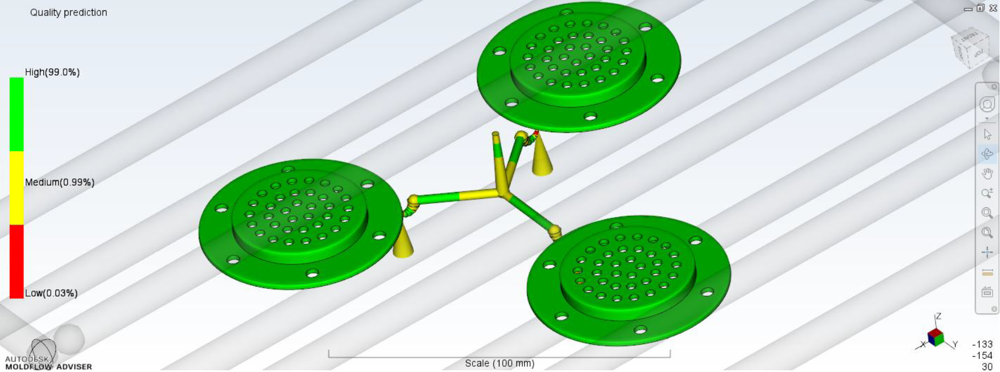
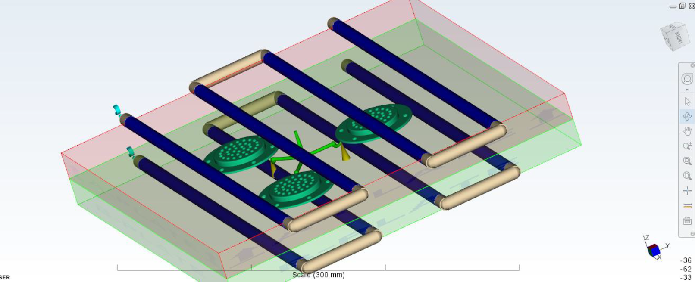
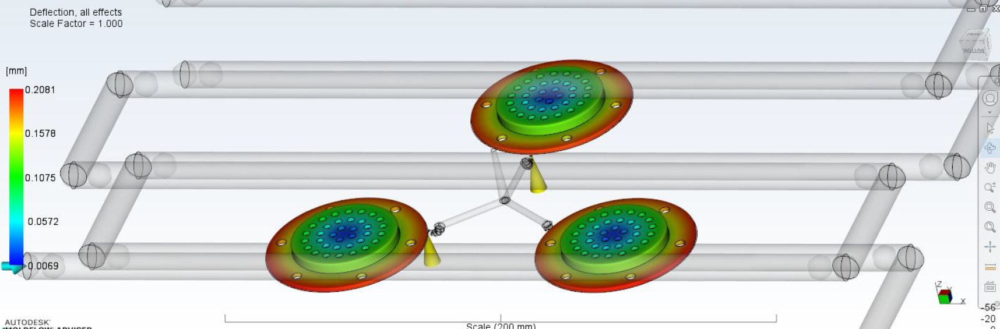
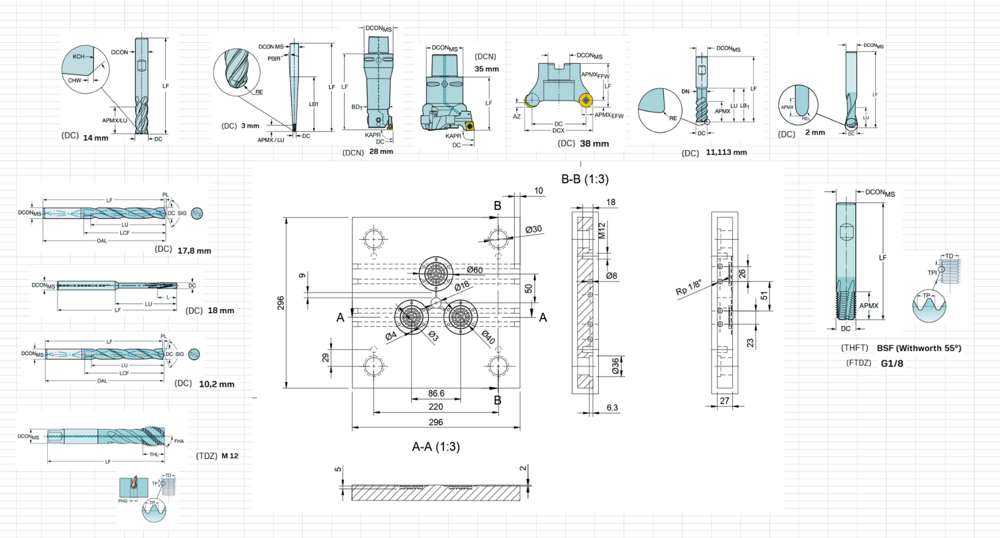

Diseño Paramétrico de Molde & Simulación Reológica de Inyección
Ingeniería de detalle para un componente acústico de pared delgada en LG ABS HF-380: optimización reológica multicavidad a 120°, diseño del circuito de refrigeración conformal, cálculo de fuerza de cierre en empaquetamiento y hoja de procesos CNC bajo estándar HASCO / Sandvik Coromant.





Flujo de ingeniería de fabricación: Modelado DFM → Simulación Reológica (MFA) → Refrigeración Conformal → Alabeo Controlado → Mecanizado CNC.
Tiempo de Ciclo
12,04 s
Optimizado desde 14,00 s ajustando packing a 2,2 s
Presión Inyección
43,7 MPa
Llenado completo de rejilla en apenas 0,56 s
Fuerza de Cierre
31,5 t
Prensa Meteor EVO 55H (550 kN de capacidad)
Deflexión Máxima
0,21 mm
Solo 0,35% del diámetro exterior (tolerancia estricta)